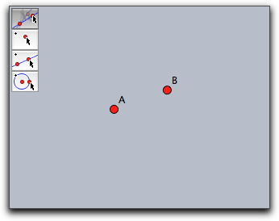
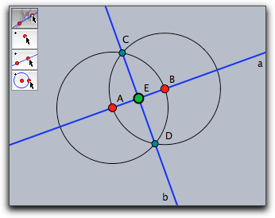
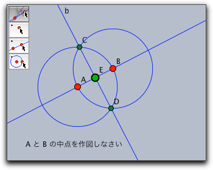
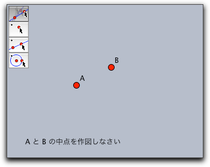
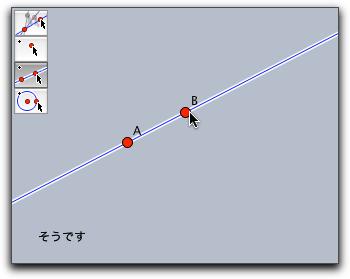
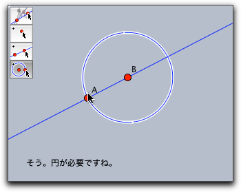
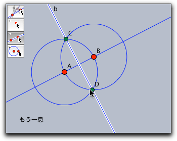
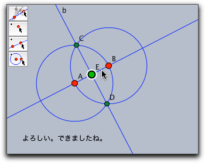

インタラクティブな練習問題
シンデレラのちょっとした歴史
シンデレラの前のバージョンである1.4版の大きな特徴の１つは、初等幾何のインタラクティブな練習問題を簡単に作ることができることでした。たとえば、２点を与えておいて「中点を作図しなさい」といったものです。生徒はWebページ幾何ツールを使って問題を解きます。彼が問題を解く間、シンデレラはその操作を監視し、適切なヒントやコメントを出します。作図に成功すれば、成功のメッセージが表示されます。残念ながら、この機能性はバージョン2.0の時点では、もう利用できませんでした。私たちがこの機能を取りやめたのにはいくつかの理由がありました。そのひとつは、より高度で柔軟な練習問題のフォーマットをサポートするために、学生用練習問題とスクリプト機能を統合するという目的のためでした。もうひとつは、ごくわずかなユーザーしか練習問題を作るという可能性を利用しなかったということです。この版で、われわれは再び
createtool(...)演算子を含む練習問題作成の可能性を提供します。これと、インタラクティブな練習問題のために、統合化された探査機能により生徒の解答を常にモニタリングすることが鍵となります。シンデレラの旧バージョンとは対照的に、もう練習問題エディタはありませんが、適切なスクリプトを書くことによって練習問題を作り出します。このあと、以前の練習問題作成機能だけでなく、 CindyScript の力と融通性を示します。この節では、いくつかの技術的な説明とともに、練習問題を作るのに必要な基本技術を解説します。われわれのWebサイト http://cinderella.de
書きだしツール
２点A,Bを与えてその中点を作図するという練習問題を考えます。学生は直線を引き、円を描き、点を打つ方法を知る必要があります。そのため、最初に行なうのは専用のツールバーを作ることです。そのために、
createtool(...) 関数 を使います。これで専用の小さなツールバーを作ることができます。CindyScriptの Initializationスロットに次のコードを書きます。createtool(["Move","Point","Line","Circle"],2,2);
次に、問題用に２つの点をとりますと、次の図のようになります。

例示の図を作る
次に、中点を作図するための例を作ります。この図は、学生にヒントとして示すものです。この図は、普通に作図ツールを用いて作図します。インスペクタを使って見栄えをよくしましょう。次の図のようになります。

問題文を加える
次に問題文を作成します。学生が問題に取り組む間、ヒントとなるメッセージを出すのにも使います。そこで、メッセージとなるテキストを、それを表示する命令文とは切り離します。そのためにはいくつかの方法があります。次の行を Initialization スロットに書きます。
message=" A と B の中点を作図しなさい";
draw スロットに次のような１行を書きます。
drawtext((-8,0),message);
図は次のようになります。

例示の図を隠す
前述のように、例示する図は学生の解答と比較するひな形として用いられるだけです。したがって、始めは隠しておかなければなりません。インスペクタを用いれば非表示にすることができました。あるいは、Initializationスロットに、A,B以外の要素を非表示にする次のようなコードを書きます。
apply(allelements()--[A,B],el,el.visible=false);
これで練習問題は完成です。

成功メッセージを作る
ここは、トリッキーな部分になります。学生が正解を得たならば成功メッセージを表示したいのです。そのためには、シンデレラについて、以下に述べる重要なことがらを知っておかなければなりません。幾何要素が作られるときには、シンデレラの探査機能が働き、既存の要素がそこにあればそれを使い、新しい要素は追加されません。既存の要素が不可視でもこの機能は働きます。この場合、既存の要素の表示/非表示フラグが「true」つまり「表示」になるだけです。今の場合、学生が何らかの方法で正しく中点を作図したならば、探査機能はすでに作図してあった中点の E が再利用します。こうして、学生の作図手順によらず、点 E と同じものであればそれを受け入れて成功メッセージを出すことになります。
ですから、成功メッセージを出すかどうかは、点 E が表示フラグが true になったかどうかを調べるだけでよいのです。次のコードを draw スロットに書き加えます。
if(E.visible,message="よろしい。できましたね。")
学生が何らかの方法で中点を作図できたならば点Eが表示され「よろしい。できましたね。」というメッセージが表示されます。
途中でコメントを表示する
さらに改善をしましょう。学生が作図に必要な要素をひとつ作ったならばなんらかのメッセージを出すようにします。そのために、先ほどの
if(...) 命令文を、例示のために作った図のどの要素が描かれたかを調べてメッセージを出すような小さなプログラムに置き換えます。たとえば、次のようなコードを drawa スロットに書きます。clrscr(); chain=[ [a,"そうです"], [C0,"そう。円が必要ですね。"], [C1,"そう。円が必要ですね。"], [b,"もう一息"], [E,"よろしい。できましたね。"] ]; visible=select(allelements(),#.visible); found=select(chain,el,contains(visible,el_1)); if(found!=[], message=found_(-1)_2; ); drawtext((-8,0),message);
ここで、
chain リストは、幾何要素とそれがつくられたときに表示するメッセージの組からなります。次の行は、既存の要素で表示モードになったものを探しだして
found リストとします。visible=select(allelements(),#.visible); found=select(chain,el,contains(visi,el_1));
最後に、次の行でこのリストの中で最後に作られたものに対応するメッセージを取り出します。
if(found!=[], message=found_(-1)_2; );
そして、これを表示します。
drawtext((-8,0),message);
でき上がったもの
もし学生が標準的な方法で問題を解いたならば、次のようになるでしょう。




書きだし
最後に、Web用にHTMLに書きだします。これでインタラクティブなWebページでこの練習問題が使えるようになります。さらに、もとの図の一部とヒントを関連付けるためのよりうまい方法があります。われわれのWebページ http://cinderella.de
Page last modified on Saturday 25 of February, 2012 [13:02:34 UTC].
The original document is available at
http://doc.cinderella.de/tiki-index.php?page=Interactive%20ExercisesJ